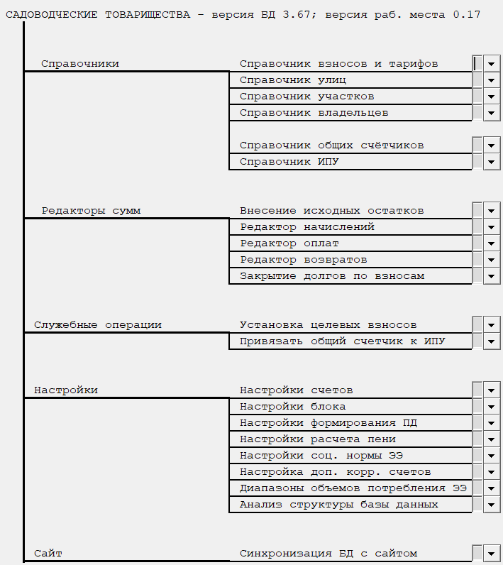

Бланк "Ввод исходных данных".
Данный бланк предназначен для ввода исходных данных для работы с блоком СНТ.

Рис. 1. Бланк "Ввод исходных данных".Рассмотрим более подробно каждый из пунктов:
-
Закрытие долгов по взносам
-
Привязать общий счётчик к индивидуальным
-
Настройка счетов - переход к бланку 1.01 Настройка счетов.
-
Настройка соц. нормы ЭЭ
-
Анализ структуры базы данных - переход к бланку Анализ структуры базы данных.